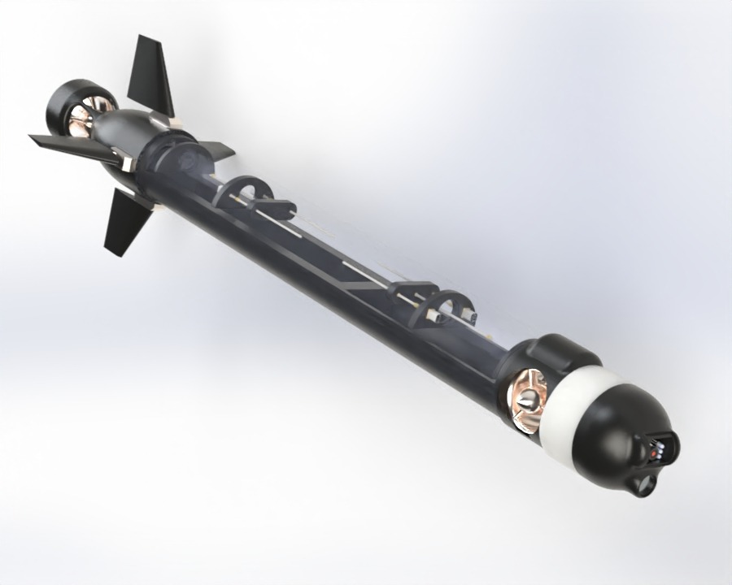
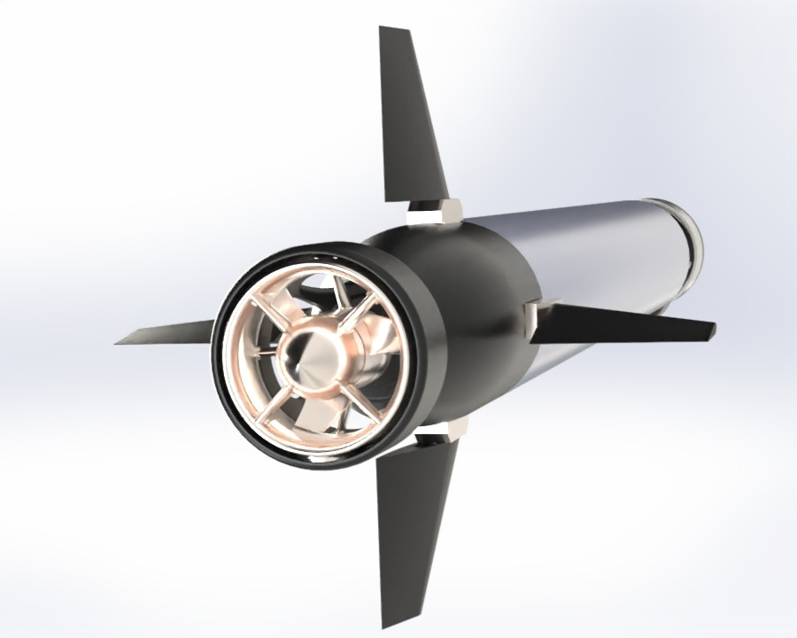
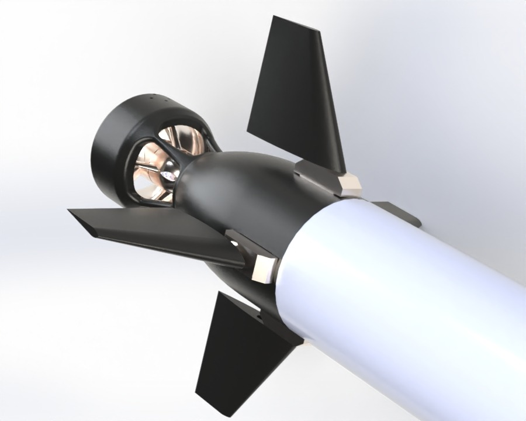
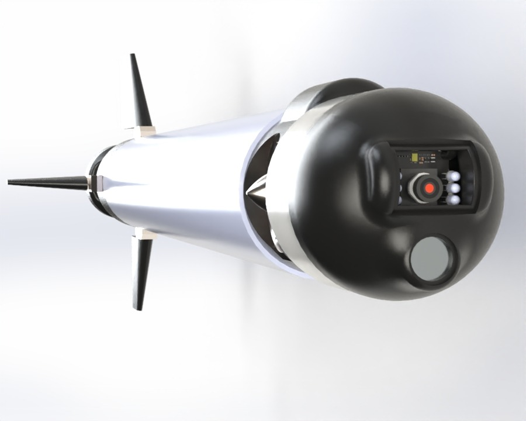
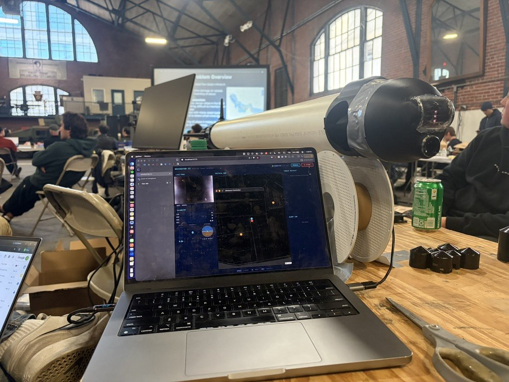
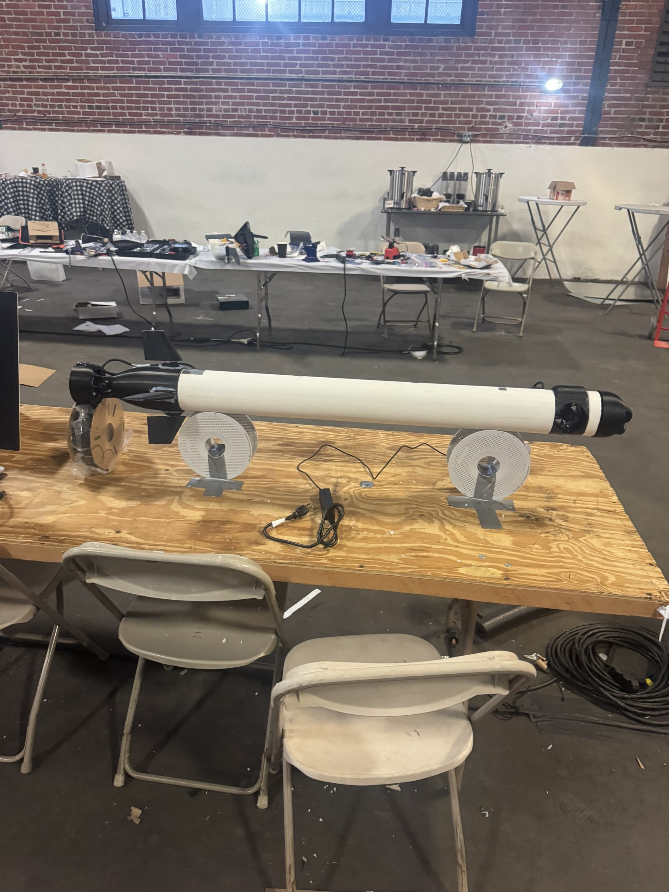
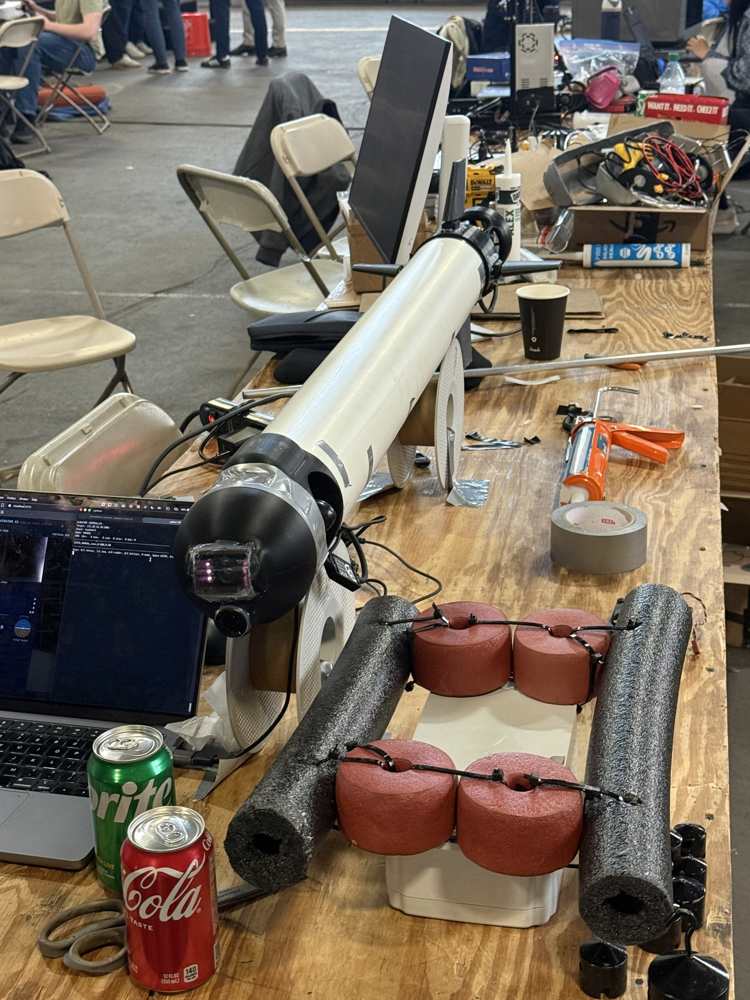
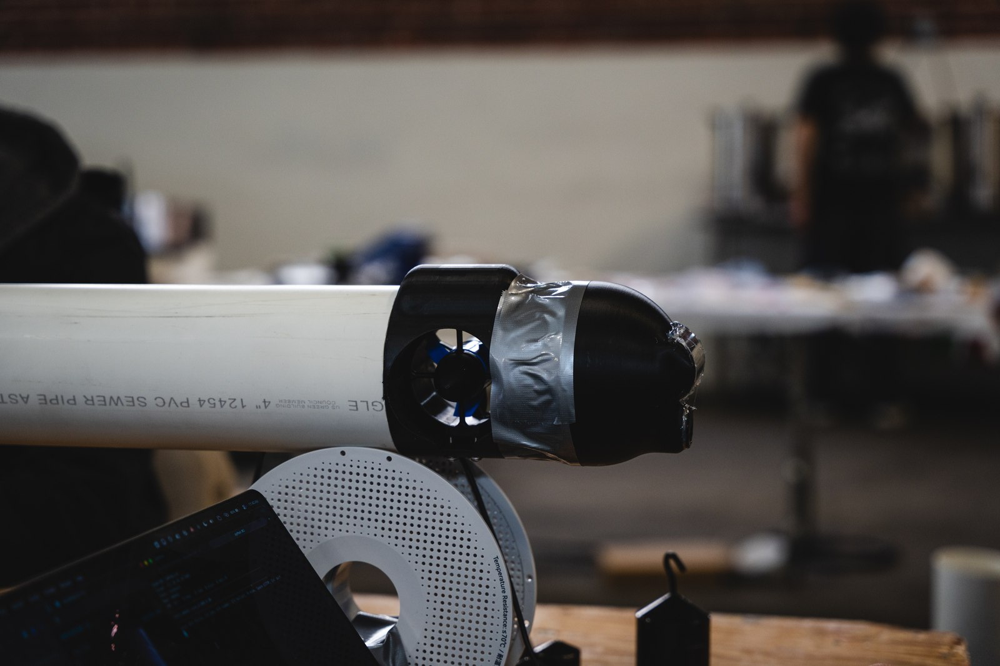
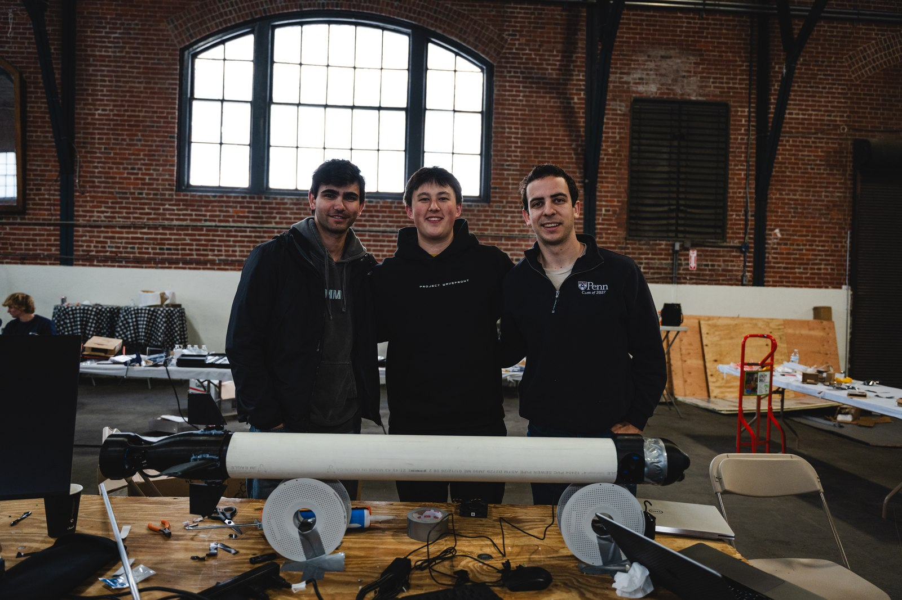

Overview
The brief was maritime defense: a low-cost, autonomous underwater vehicle that can persist in an area, sense what moves through it, and act without a human in the loop. The long-term vision is a distributed swarm; the weekend deliverable was a single unit built around that core autonomy pipeline. Beyond strike, the same platform is aimed at the roles that dominate real naval operations: distributed acoustic surveillance and mine countermeasures. A recurring theme in the design was the mission-kill idea explored in naval strategy circles: disabling a vessel's propulsion rather than sinking it, which is less escalatory and preserves options.
Vehicle & propulsion
The vehicle is a 4-inch PVC pressure hull with 3D-printed endcaps, cable glands for every external sensor, and an internal rail that slides the electronics out for bench work. Propulsion combines a BlueRobotics T200 main thruster, a pivoting front thruster for low-speed vectoring, and four servo-actuated fins. Depth is set by a ballast tank driven by a small motor turning a threaded rod, closed against a pressure sensor. The whole vehicle is trimmed near neutral buoyancy so a small ballast motor can control depth, and it is designed to fail safe by blowing ballast to the surface on a fault.



Controls architecture
To make the controls tractable in a weekend, we decoupled them: the horizontal plane (main thrust plus fin steering) and the vertical plane (ballast) are treated as independent problems, and the vehicle is held parallel to the surface rather than pitching. That simplification turned a coupled 6-DOF control problem into two manageable loops without giving up the maneuvers the mission actually needs.
Sensing & autonomy
Sensing is deliberately cheap and hybrid rather than dependent on any one channel. A four-element hydrophone array uses time-delay-of-arrival between elements to estimate the bearing and range of a sound source, and a classification stage matches propeller acoustics to identify what it is hearing. A forward camera runs OpenCV object detection for tracking, and four ultrasonic sensors handle close-range obstacle avoidance. Navigation layers GPS fixes at the surface, IMU dead-reckoning while submerged, and vision-based tracking on the target. A Jetson Orin Nano runs the inference; a Teensy 4.1 handles real-time actuation.


Swarm & systems concept
The swarm layer is what makes the platform interesting at scale, and most of it is a systems and software story. An operator draws an area of interest and the available units distribute themselves across it. Each unit is meant to be expendable, on the order of $1,500 in off-the-shelf and 3D-printed parts, with a 10-to-15-day loiter time and the option to deploy by air, sea, or land. To watch a wide volume of water without an expensive all-around sensor suite, a unit shifts ballast fore and aft to tip nose-up and loiter vertically, aiming its forward camera and hydrophone at the water above while keeping its acoustic signature low. Contacts are classified on-board and relayed over a short-range acoustic link to a surface mothership that passes them onward, since radio does not travel underwater, so a decision-maker sees them within seconds. We prototyped the swarm-management and return-to-base logic in software, where a unit nearing end-of-charge hands off to a fresh one for continuous coverage.
My role
I focused on the ballast system and the vehicle's mechanical integration. That meant designing the depth-control mechanism and the buoyancy trim, selecting mechanical components that would fit and survive in a sealed hull, and packaging the propulsion, sensing, and compute so they physically worked together in one PVC tube. On a weekend build with a mixed team, that integration work, the sealing, packaging, trim, and part selection that gets everything into one vehicle, is the part I owned.



